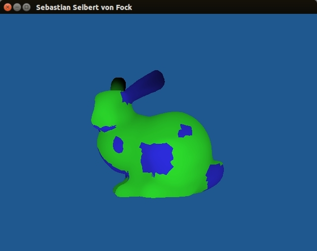
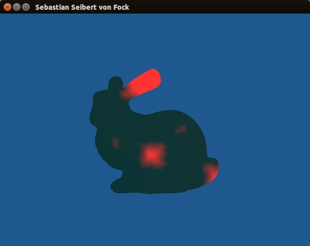

When pressing the 'C' key the program will start to compare all the vertices on the compare model with all the vertices in the reference model. It will then shade the compare model different shades of red depending on how far away the closest vertices of the reference model is with a bright red meaning very far away and black meaning that they are right on top of each other.
The purpose of this project was to be able to take two 3D model obj files and visualize the difference between them. There is one reference model that can't be moved and one compare model which compares itself against the reference. The useful applications of this would be to, for example, take 2 different 3D models of the same object obtained from real world scanning and see what the differences are. This could then be used to create a more accurate combined model. Another application for this is to check if to see a percentage value of how different the two models are to check if they are the same object.
I had two parts to my project.
- Have the user roughly align the models (User Alignment)
- Compute and visualize the difference between the files (Computing and Visualizing Differences)
User Alignment

models manually roughly aligned
My program had some basic commands that allow the user to move the compare model so that the user can roughly align it with the reference model. The user can move the compare model in all three axis (X, Y, and Z). He or she can also uniformly scale and rotate the compare model around the Y-axis. Finally, the user can rotate the entire world (both reference and compare model) around the Y-axis to check that the alignment is as close as they can get on all sides.
I used basic Matrix transforms to do this. To get user input I used both Keyboard presses and mouse movement (calculate mouse velocity per frame).
Controls
| Move in X and Y | Click and drag mouse |
| Fine move in X and Y | Arrow Keys |
| Rotate around Y-axis | 'A' and 'D' Keys |
| Fine rotate around Y-axis | 'Q' and 'E' Keys |
| Scale (uniformly) | 'I' and 'K' Keys |
| Fine scale (uniformly) | 'J' and 'L' Keys |
| Toggle compute and show distances | 'C' Key |
| Toggle show/hide reference model | 'B' Keys |
| Rotate world (uniformly) | 'T' and 'Y' Keys |
| Exit | 'esc' Key |
Computing and Visualizing Differences

differences of the models shown in red
Lesson's Learned
The main lesson that I learned is how hard it is to figure out exactly what gets computed in the CPU (cpp files), what gets computed in the GPU (shader files), and how to send data between them. I had originally tried to compute the difference in the CPU and then sending the array of differences to the GPU. This proved to be very difficult especially since I only wanted to send it data when the user toggled the compute/visualize key since I didn't want to have the program have to constantly compute the difference before the user roughly algined the models. In hindsight, this would have most likely been much slower anyway since the GPU specializes in doing many simple things at one time.
Future Goals
There are several things I would like to add and improve on in the program in the future.
- Improve running time by only computing difference of vertices close to each other (don't compare to every other vertex in the reference model).
- Add functionality to further auto align once user has roughly placed model in correct place
- Add functionality for user to select areas of difference and decide to either add these or delete these to a third combined model.